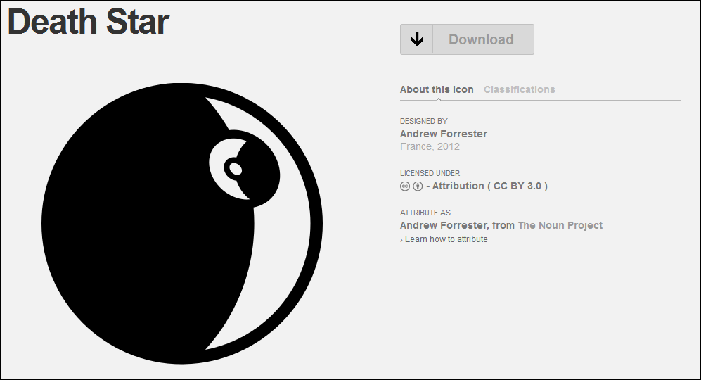
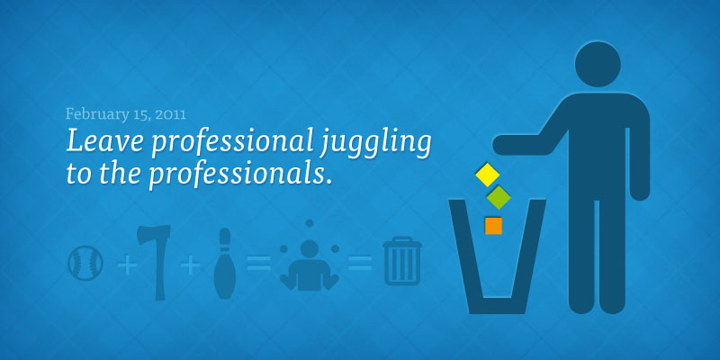

When I suggested an animated encyclopedia of verbs and processes, I naively assumed that nouns were taken care of. Not so, as The Noun Project demonstrates. The site, which began with the question, “what if I had a sketch for every single object in the world?”, is a repository of simple SVG icons typically found on maps and signs, as well as a few not-so-common icons. It is a sign of the ubiquity of information visualization that these sorts of projects are beginning to appear to complement the growing data visualization libraries and tools.
I was disheartened to see that, aside from a single soldier, there were no icons for Ancient Rome–the icon for a “city” is of the kind that comes with clock towers and skyscrapers. But it makes me think we should have a Digital Humanities Icon Camp to try to work out a few icon primitives for nouns in the humanities. This might all sound very silly to some, but as we begin to define vocabularies (or ontologies or data models) as one of the products of digital humanities work, how we represent individual elements of those vocabularies in data visualization should not default to whatever icons are available in the standard ArcGIS or Tableau libraries. If we are to use discrete, abstract representations of nouns in our data visualization in the humanities, which seems to be the case, then should we not formally examine the process by which these discrete representations are created, defined and implemented?

One of the worries about using and representing data in the humanities is the implied exactitude of it all. So, it’s enlightening to browse through the submissions and see the number of different ways that bicycles, mopeds and guitars can be displayed using simple black-and-white vector graphics. If we can have thirteen different icons for a motorcycle, each emphasizing different legitimate views of what constitutes the formal object, then maybe we can also have a few different icons for an aristocrat or a revolutionary or a poet. Maybe such an icon can even change over time to indicate the changing definition of such a role within a society. “Ambitious temporally-aware dynamic icons for digital humanities information visualization” sounds like a good title for a grant.The Noun Project also maintains a blog that’s a great resource for design thinking, with insightful posts on symbology and effectiveness. It also provides some helpful advice for those of us who are not Scott Weingart.
